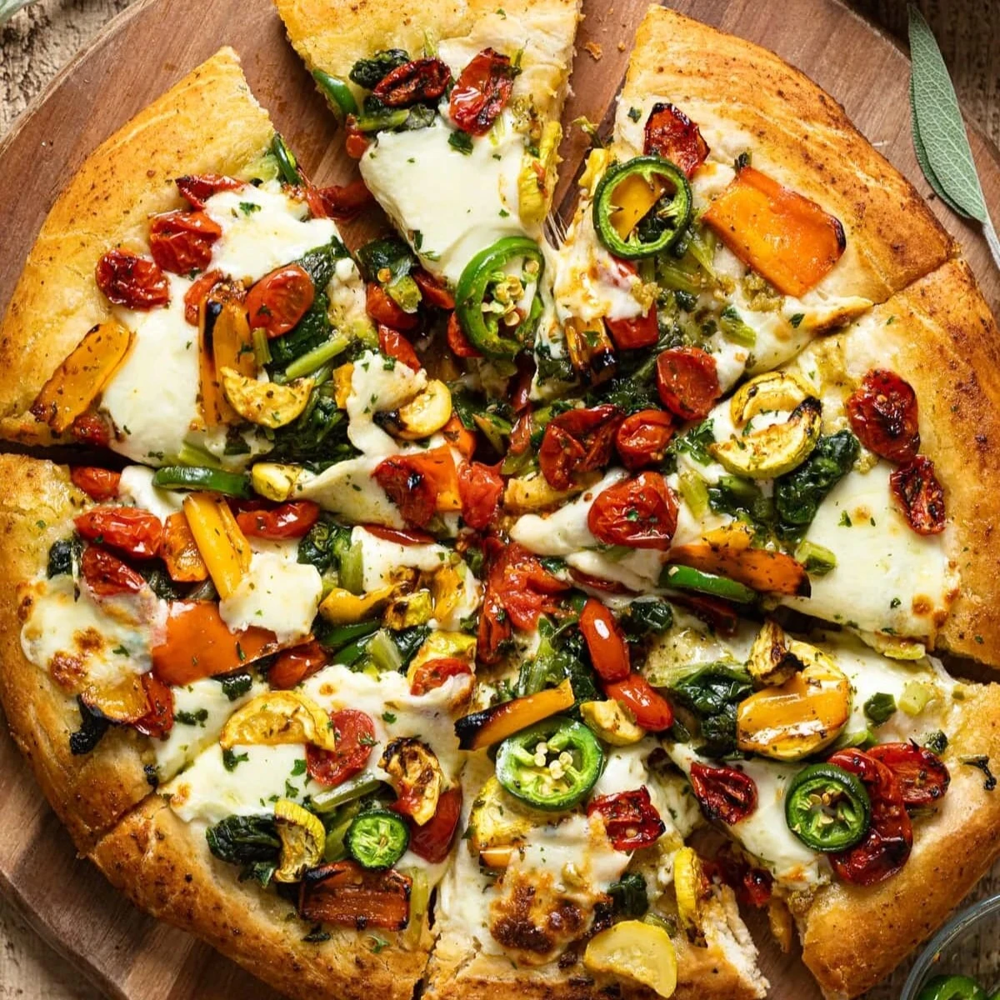

Momo

Description
This is our 30-Minute Homemade Stuffed Crust Pizza recipe that only uses two ingredients for the dough and is so simple to make. We have this at least once a week and change it up with different toppings.
Ingredients
- 150g self-raising flour
- 150g cottage cheese
- 75g grated mozzarella cheese
- 3 tablespoons marinara sauce
- 5 slices mozzarella cheese
- 10 fresh basil leaves
Steps/Instruction
- In a large bowl, combine your self-raising flour and cottage cheese. Mix until a rough dough forms, then knead for 3 minutes. Cover in cling film and set aside while you prepare your toppings.
- Slice your cherry tomatoes in half, and cut your mozzarella into discs.
- Preheat your oven to 220C or 200C fan.
- Sprinkle some flour onto a clean surface and then roll out your dough into a large pizza shape around half a cm thick.
- Place grated mozzarella cheese all around the edge of the pizza and then fold over the edges, tucking in the cheese, and seal to ensure that the mozzarella doesn’t ooze out and that the crust stays in shape.
- Top your pizza base with marinara sauce, cherry tomatoes, sliced mozzarella, and 5 of your fresh basil leaves.
- Place your pizza onto your pizza tray and then into the oven for 10-15 minutes or until the pizza is puffed up and golden, then serve up with the remaining basil leaves and enjoy!
Recipe Credit: Myriad Recipes by Emily Roz
Go Back